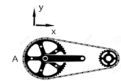
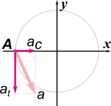

|
NO ME SALEN
EJERCICIOS RESUELTOS DE FÍSICA
(Movimiento circular)
|
|

|
| |
FIS cN6.21* - El piñón (radio RP= 3 cm) y corona (RC= 9 cm) de una rueda de bicicleta se encuentran vinculados por la cadena como indica la figura. El piñon comienza a girar, partiendo del reposo con aceleración angular constante en sentido antihorario. Al cabo de 5 segundos el ángulo girado por el piñon es θ = 20 π radianes.
|
 |
a) Calcular el módulo de la velocidad de un eslabón cualquiera de la cadena en el instante t = 5 s.
b) Calcular (en el sistema de referencia indicado) las componentes del vector aceleración de un eslabón de la cadena en el punto A en el instante t = 5 s.
|
|
| *Este ejercicio formó parte del primer examen parcial de Física tomado en octubre de 2022. |
|
|
|
Asusta un poco es cierto... pero lo que nos sobra es coraje. Hagamos un buen esquema. |
|
|
Arranquemos con el piñón. Su movimiento es circular uniformemente variado, no cabe duda. Los modelos correspondientes son estos.
Θ = Θo + ωo ( t – to ) + ½ γ . ( t – to )²
ω = ωo + γ . ( t – to )
Tomemos θo = 0 y to = 0. Además el enunciado indica que arranca desde el reposo, entonces ωo = 0. Las ecuaciones que describen el novimiento de piñón quedan así:
Θ = ½ γP . t²
ω = γP . t
Con la primera podemos averiguar el valor de la aceleración angular, ya que el enunciado indica que cuando pasaron 5 segundos desde que arranca habrá girado...
20 π = ½ γP . (5 s)²
De ahí surge que...
γP = 1,6 π s-2
Co eso vamos ahora a la segunda ecuación y sabremos cuánto vale la velocidad angular en ese instante:
ω(5s) = γP . 5 s
ω(5s) = 1,6 π s-2 . 5 s
ω(5s) = 8 π s-1
La velocidad de los eslabones de la cadena, en cualquier posición sobre la cadena, es igual a la velocidad tangencial de un punto periférico del piñón. Y por la relación fundamental de los movimientos circulares...
v(5s) = ω(5s) . RP
v(5s) = 8 π s-1 . 3 cm
|
|
|
| |
v(5s) = 24 π cm/s = 75,4 cm/s |
|
|
|
|
b) Calcular (en el sistema de referencia indicado) las componentes del vector aceleración de un eslabón de la cadena en el punto A en el instante t = 5 s.
El punto A es parte de la corona. De modo que vamos a necesitar conocer la velocidad angular y la aceleración angular de la cadena (que no son iguales a las del piñón). Lo que tienen ambos en común es la velocidad tangencial (la cadena no se estira ni contrae). Entonces...
ωC . RC = ωP . RP
ωC = ωP . RP / RC
ωC = ωP . RP / RC
Por lo tanto, a los 5 segundos...
ωC(5s) = ωP(5s) . RP / RC
ωC(5s) = 8 π s-1 . 3 cm / 9 cm
ωC(5s) = 2,67 π s-1
Con la aceleración angular pasa exactamente lo mismo:
γC = γP . RP / RC
γC = 1,6 π s-2 . 3 cm / 9 cm
γC = 0,53 π s-2
Con esos dos valores podemos conocer las componentes de la aceleración. El el punto A apuntando como el eje x, tenemos la aceleración centrípeta:
aC = ωC2 . RC
aC = (2,67 π s-1)2 . 9 cm
aC = 64 π2 cm/s2
Y la aceleración tangencial en el punto A coincide con la dirección y (pero en sentido contrario).
at = γC . RC
at = 0,53 π s-2 . 9 cm
at = 4,8 π cm/s2
|
|
|
Por si te perdiste, acá te hice una representación gráfica de las componentes de la aceleración (no están en escala, pero sirve igual). La circunferencia representa a la corona.
Luego, en base al sisteme de referencia dado por el enunciado, la expresión cartesiana del vector aceleración de la corona en el punto A, aCA, será: |
 |
|
|
|
| |
aCA = ( 64 π2 î — 4,8 π ĵ ) cm/s²
aCA = ( 631 î — 15 ĵ ) cm/s² |
|
|
|
|
|
|
|
DESAFIO: ¿Y en coordenadas polares? |
|
 |
| Algunos derechos reservados (en criollo: no podés publicarlo a tu nombre, ¿entendiste? Mirá que tengo un boga repesado, ¿eh?).
Eso sí, se permite su reproducción citando la fuente, o sea, papá. Última actualización oct-22. Buenos Aires, Argentina. |
|
|
| |
|